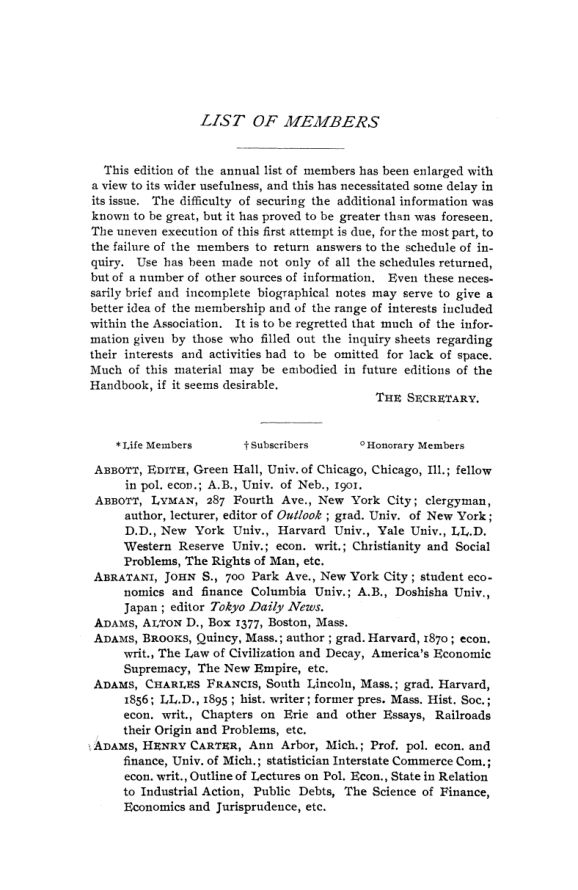

Chicago, 1904 (II): trustes, ferrovias e preferência imperial
Leitura: 8 min
Segunda parte da reunião de Chicago: como o governo federal pode conter os trustes, quem deve fixar a tarifa ferroviária, como tributar ferrovias e se a preferência imperial leva ao livre comércio.


Edward B. Whitney avisou que não tentaria cobrir a questão dos trustes em vinte minutos. Advogado, falou só de remédios jurídicos ao alcance do governo federal e começou por um fato de calendário: em Nova York, a primeira lei que permitiu fundir empresas manufatureiras é de 1867, e as leis que deixaram uma companhia comprar ações de uma rival para controlá-la são de 1892, posteriores ao Sherman Act. O truste, concluiu, era em parte produto de legislação.
Este número reúne a segunda parte dos trabalhos da décima sétima reunião anual, realizada em Chicago em dezembro de 1904: a sessão sobre corporações e ferrovias, a de tributação ferroviária, a de tarifas preferenciais e reciprocidade e a de história econômica, esta numa sessão conjunta com a American Historical Association em 30 de dezembro. A primeira parte, com o discurso de Taussig sobre o livre comércio, o debate monetário e a oficina aberta, está no nº 73 deste arquivo.
O que o governo federal pode fazer contra os trustes?
Whitney sustentou que o Congresso, pelo poder de regular o comércio interestadual, pode impor condições às corporações estaduais que dele participam, como os estados fazem com empresas de fora. Daí sairiam remédios diretos: excluir as holdings, separar o transporte da produção, exigir publicidade das contas e limitar o capital. Rejeitou a ideia de dar aos juízes poder de dispensar restrições ao comércio que parecessem razoáveis; se esse poder existisse, deveria caber a um corpo técnico.
Quem deve fixar a tarifa ferroviária?
Martin A. Knapp, presidente da Interstate Commerce Commission, separou dois problemas. Os descontos secretos sobre a tarifa publicada são crime e se combatem com a máquina penal. A tarifa publicada que é excessiva ou desigual exige outra coisa: um tribunal administrativo que, depois de ouvir as partes, prescreva a tarifa substituta, sujeita a revisão judicial. E propôs legalizar a ação conjunta das ferrovias, porque a lei, a seu ver, exigia ao mesmo tempo competição e ausência de discriminação:
“O poder de competir é o poder de discriminar.” (“The power to compete is the power to discriminate”)
Na discussão, Edward P. Ripley, que dizia fazer tarifas de frete havia quase quarenta anos, objetou que dar efeito imediato às decisões da comissão seria enforcar primeiro e julgar depois. W. Z. Ripley defendeu tornar o pool um acordo exigível em juízo. Horace White resumiu a disputa a uma questão prática: se a ferrovia pode dar garantia ao recorrer, por que não o reclamante?
Como tributar uma ferrovia?
Henry C. Adams, da University of Michigan, mostrou que, apesar das máquinas administrativas próprias, quase todos os estados tributavam ferrovias pelo valor, como qualquer propriedade. A novidade estava na jurisprudência: ao reconhecer um valor de franquia acima do valor físico, os tribunais abriam a pergunta sobre a origem desse excedente.
Para Adams, o excedente vinha do tráfego sem concorrência, das conexões e, sobretudo, das economias de densidade criadas pelo crescimento da população: um valor socialmente produzido, que a concorrência não transfere ao público. Daí a tese de uma copropriedade entre público e corporação. William W. Baldwin respondeu que tributar o excedente de uma única classe de propriedade iria longe demais e examinou o caso de Michigan, onde a avaliação dependia da taxa de retorno considerada adequada, 3,5% para a Michigan Central.
A preferência imperial aproxima o livre comércio?
Adam Shortt, da Queen's University, abriu com um aviso de método:
“teorias duvidosas ou falsas muitas vezes têm muito mais peso […] que as verdadeiras” (“doubtful or false theories often have much more weight … than true ones”)
Contou que a preferência canadense aos produtos britânicos nasceu em 1897 como saída política do Partido Liberal, não como sacrifício pelo Império, e que não deteve a perda de participação britânica nas importações do Canadá. G. E. Foster defendeu a preferência por razões comerciais e imperiais e declarou a reciprocidade com os Estados Unidos uma questão morta no Canadá.
A. W. Flux contestou a crença de que a reciprocidade é meio caminho para o livre comércio. Para o livre-cambista, reduzir a tarifa vale por si; para o protecionista coerente, não há razão para trocá-la. Na prática, guardar tarifas como moeda de troca adia reduções: as alíquotas canadenses de 1897 foram mantidas mais altas à espera de um tratado com os Estados Unidos que não veio.
Os cercamentos foram uma catástrofe súbita?
Edwin F. Gay, de Harvard, revisou a história dos cercamentos ingleses com os relatórios das comissões de inquérito dos séculos XVI e XVII. Concluiu que o movimento durou mais de quatro séculos, concentrou-se nos condados centrais e foi menor do que diziam os panfletos da época:
“sua ação foi erosiva, e não vulcânica” (“its action was erosive rather than volcanic”)
Na mesma linha de história econômica, Carroll D. Wright apresentou o plano do Departamento de Economia e Sociologia da Carnegie Institution: onze divisões, de população a finanças públicas, com cerca de setenta e cinco pessoas trabalhando. Charles H. Hull, Jacob H. Hollander e Henry R. Seager discutiram o alcance do projeto, e Wright respondeu que o propósito principal era reunir material para historiadores e economistas.
Na minha leitura
Na minha leitura, o argumento de Flux é o que melhor resistiu ao tempo. Ele separa a justificativa de uma redução tarifária, que está no ganho de quem reduz, da lógica de barganha, que trata cada alíquota como ficha a ser trocada. O efeito prático da segunda é perverso: a tarifa alta vira refém da negociação e o país paga por ela enquanto espera. O exemplo canadense de 1897 ilustra o mecanismo com o próprio debate parlamentar. A sessão de Shortt complementa o argumento com dados: uma preferência de um terço não mudou a composição do comércio, porque o que o Canadá comprava dos Estados Unidos não era o que a Grã-Bretanha vendia.
Nas ferrovias, Knapp e Adams chegam ao mesmo ponto por caminhos diferentes. Knapp argumenta que não se pode ter, ao mesmo tempo, competição de preços entre ferrovias e tarifa igual para todos; Adams, que as economias de densidade geram um excedente que a concorrência não distribui. Lidos juntos, descrevem o que hoje se chamaria de monopólio natural, uma indústria de custos fixos altos, e deslocam a pergunta de “se” regular para “quem” regula e com que informação. Gay, por sua vez, dá uma lição de método que vale para qualquer tema: confrontar a retórica dos contemporâneos com os registros administrativos antes de medir o tamanho de uma transformação.
Glossário
- Holding
- companhia cujo ativo principal são ações de outras empresas, que ela controla.
- Sherman Act
- lei federal antitruste americana de 1890, que proíbe contratos e combinações em restrição do comércio.
- Restrição do comércio (restraint of trade)
- acordo ou combinação que limita a concorrência; o debate era se só as restrições “razoáveis” seriam lícitas.
- Rebate
- desconto secreto concedido por uma ferrovia a certos embarcadores sobre a tarifa publicada.
- Pool
- acordo entre ferrovias concorrentes para dividir tráfego ou receitas.
- Interstate Commerce Commission
- comissão federal criada em 1887 para fiscalizar as tarifas ferroviárias interestaduais.
- Regra da unidade (unit rule)
- avaliação da ferrovia como um todo contínuo, repartida depois entre as jurisdições que ela atravessa.
- Valor de franquia
- parte do valor de uma empresa acima do valor de sua propriedade física, reconhecida pelos tribunais.
- Tarifa preferencial
- alíquota menor concedida às importações de certos países, no caso, do Império Britânico.
- Reciprocidade
- redução tarifária concedida por tratado em troca de concessão equivalente, sem extensão a terceiros.
- Cláusula de nação mais favorecida
- compromisso de estender a um parceiro qualquer vantagem tarifária dada a outro país.
- Cercamento (inclosure)
- conversão de campos abertos e terras comunais em propriedades fechadas de uso privado.
Artigos desta edição
- Governmental Interference with Industrial Combinations — Edward B. Whitney (pp. 1–19). Whitney limita-se aos remédios jurídicos ao alcance do governo federal, sem emenda constitucional. Mostra que o truste é em parte produto de legislação estadual recente, como as leis de holding de Nova York, de 1892, e de Nova Jersey, de 1888 a 1893. Sustenta que o Congresso, ao regular o comércio interestadual, pode impor condições às corporações estaduais: excluir holdings, proibir que transportadoras atuem na produção, exigir publicidade das contas e limitar o capital por taxa graduada. Rejeita um poder judicial de dispensa para restrições “razoáveis” e prefere confiá-lo, se for o caso, a um corpo técnico. Fecha com a hipótese de que a era das invenções termine e o mundo se torne relativamente estático. JSTOR
- The Regulation of Railway Rates — Martin A. Knapp (presidente da Interstate Commerce Commission) (pp. 20–30). Knapp parte da ferrovia como estrada pública moderna, cujo uso igual é um direito. Separa os descontos secretos sobre a tarifa publicada, que devem ser tratados como crime pela justiça penal, da tarifa publicada excessiva ou desigual, que só um tribunal administrativo pode corrigir, prescrevendo a tarifa a vigorar depois de ouvir as partes, com revisão judicial. Os tribunais comuns, diz, não podem fixar tarifas futuras. Conclui que a política de forçar a competição entre ferrovias é a fonte das discriminações e defende legalizar a ação conjunta das transportadoras, combinada com o poder da comissão de condenar e substituir tarifas. JSTOR
- Discussion on Papers by Whitney and Knapp on Corporations and Railways — Edward P. Ripley, John H. Gray, W. Z. Ripley, H. T. Newcomb, F. B. Thurber, William F. Folwell, Edward B. Whitney e Horace White (pp. 31–50). E. P. Ripley descreve a evolução das tarifas e rejeita o efeito imediato das decisões da comissão; Gray e W. Z. Ripley defendem controle público e pools legais; Newcomb, Thurber, Folwell, Whitney e White discutem rebates, revisão judicial e garantias. JSTOR
- Tendencies in Railway Taxation — Henry C. Adams (University of Michigan) (pp. 51–60). Adams mostra que a tributação ferroviária americana não criou princípio novo: 47 dos 50 estados e territórios buscavam tributar as ferrovias pelo valor, como a propriedade em geral, e só Maine, Maryland e Minnesota usavam a receita bruta. A regra da unidade apenas aplica o princípio antigo de avaliar pelo uso. O ponto de partida novo é o reconhecimento judicial de um valor de franquia acima do físico. Adams decompõe esse excedente em tráfego sem concorrência, conexões, economias de densidade e prosperidade das indústrias servidas, e o trata como valor socialmente produzido. Daí prevê, no sistema fiscal futuro, o reconhecimento de uma copropriedade entre público e corporação. JSTOR
- Discussion on Paper by H. C. Adams on Tendencies in Railway Taxation — William W. Baldwin (pp. 61–79). Baldwin argumenta que tributar o excedente de uma só classe de propriedade iria longe demais, defende a uniformidade e examina o método de Michigan, que na prática funcionaria como imposto de renda. JSTOR
- Preferential Trade between Britain and Canada — Adam Shortt (Queen's University) (pp. 80–92). Shortt explica a preferência canadense aos produtos britânicos pela história partidária: o Partido Liberal, no poder desde 1896, precisava reduzir a tarifa sem abandonar a proteção, e a fórmula de 1897 atingia na prática só o comércio britânico. Não houve barganha nem sacrifício pelo Império. Com tabelas de 1883 a 1903, mostra que a participação britânica nas importações caiu de 42,27% para 25,19% mesmo com a preferência. A razão, diz, é que o Canadá compra dos Estados Unidos bens que a Grã-Bretanha não produz ou não adapta. Recomenda que o país mantenha flexibilidade e não se prenda a obrigações comerciais rígidas. JSTOR
- Preferential Tariffs and Reciprocity — G. E. Foster (pp. 93–105). Foster descreve as tarifas protecionistas canadenses desde 1879 e a evolução da preferência: a cláusula geral de 1897, a preferência restrita ao Império em 1898, de 25%, e a ampliação para um terço em 1900. Defende a preferência imperial como arranjo em que cada parte mantém sua autonomia fiscal e favorece os membros do Império, e cita o aumento do comércio com o Reino Unido de 1900 a 1904, admitindo não saber quanto se deve à preferência. Sobre a reciprocidade com os Estados Unidos, relata o fim do tratado Elgin em 1865 e as recusas posteriores, e conclui que o tema deixou de ser questão viva no Canadá. JSTOR
- Do Reciprocally Preferential Tariffs Tend Towards Free Trade? — A. W. Flux (pp. 106–128). Flux examina se a preferência recíproca tende ao livre comércio e responde que não, nem pela lógica nem pela experiência. Para o livre-cambista, a redução tarifária vale pelo ganho próprio, sem exigir contrapartida; para o protecionista coerente, não há razão para aceitá-la. Na história, o desejo de guardar alíquotas para barganha atrasou reduções, como no Canadá de 1897, e mesmo o tratado Cobden de 1860 estendeu as concessões britânicas a todas as nações. Com dados das importações de lã, estima que só parte do aumento se deve à preferência. Conclui que a revisão tarifária unilateral é caminho mais seguro que os tratados de reciprocidade. JSTOR
- Discussion on Reciprocity and Preferential Tariffs — H. Parker Willis, George M. Fisk e S. J. McLean (pp. 129–145). Willis registra o declínio da reciprocidade como instrumento de reforma tarifária; Fisk analisa a campanha de Chamberlain e o peso do comércio externo britânico; McLean reconstitui a alternância entre preferência e reciprocidade na história do Canadá. JSTOR
- The Inclosure Movement in England — Edwin F. Gay (Harvard) (pp. 146–159). Gay distingue dois tipos de cercamento: o das terras comunais e incultas, antigo e lento, e o dos campos abertos cultivados, iniciado no século XV e muitas vezes convertido em pastagem de ovelhas. Com base nos relatórios de inquéritos oficiais, argumenta que o movimento se concentrou nos condados centrais, foi gradual e menor do que diziam os panfletos do século XVI. Explica a lentidão pelos costumes, pela resistência dos camponeses, pela falta de capital e pela necessidade de cada região produzir seu grão. Dá também o lado do proprietário, preso a rendas fixadas pelo costume, e conclui que a primeira fase ajudou a formar uma classe média rural que a última contribuiu para destruir. JSTOR
- An Economic History of the United States — Carroll D. Wright (pp. 160–179). Wright relata a origem do projeto de uma história econômica dos Estados Unidos, esboçado por Francis A. Walker pouco antes de morrer e assumido pela Carnegie Institution. Uma comissão consultiva com Farnam, Clark e Wright recomendou o tema, e a dotação anual foi dobrada. O Departamento de Economia e Sociologia ficou com onze divisões, de população e imigração a finanças federais e estaduais, cada uma com responsável indicado. Wright descreve o roteiro de cada divisão, informa cerca de setenta e cinco pessoas em atividade e prevê oito, dez, doze ou mais volumes. Insiste que o propósito central é reunir material original para historiadores e economistas. JSTOR
- Discussion on an Economic History of the United States — John B. McMaster, Charles H. Hull, Jacob H. Hollander, Henry R. Seager, Carroll D. Wright e F. W. Taussig (pp. 180–198). McMaster situa o projeto na fase cooperativa da historiografia; Hull defende priorizar a publicação de fontes; Hollander pede descrição econômica sistemática; Seager aponta omissões, como comércio e efeitos da proteção; Wright responde. JSTOR
- List of Members — Lista de sócios (pp. 203–265). Relação nominal dos sócios da associação, com endereços e ocupações. JSTOR
Fontes
- Governmental Interference with Industrial Combinations (pp. 1–19). JSTOR · Internet Archive (PDF)
- The Regulation of Railway Rates (pp. 20–30). JSTOR · Internet Archive (PDF)
- Discussion on Papers by Whitney and Knapp on Corporations and Railways (pp. 31–50). JSTOR · Internet Archive (PDF)
- Tendencies in Railway Taxation (pp. 51–60). JSTOR · Internet Archive (PDF)
- Discussion on Paper by H. C. Adams on Tendencies in Railway Taxation (pp. 61–79). JSTOR · Internet Archive (PDF)
- Preferential Trade between Britain and Canada (pp. 80–92). JSTOR · Internet Archive (PDF)
- Preferential Tariffs and Reciprocity (pp. 93–105). JSTOR · Internet Archive (PDF)
- Do Reciprocally Preferential Tariffs Tend Towards Free Trade? (pp. 106–128). JSTOR · Internet Archive (PDF)
- Discussion on Reciprocity and Preferential Tariffs (pp. 129–145). JSTOR · Internet Archive (PDF)
- The Inclosure Movement in England (pp. 146–159). JSTOR · Internet Archive (PDF)
- An Economic History of the United States (pp. 160–179). JSTOR · Internet Archive (PDF)
- Discussion on an Economic History of the United States (pp. 180–198). JSTOR · Internet Archive (PDF)
- List of Members (pp. 203–265). JSTOR · Internet Archive (PDF)
- Sumário da edição no JSTOR: Publications of the American Economic Association, 3ª série, vol. 6, nº 2.
Documento em domínio público (EUA, publicado antes de 1931), via JSTOR Early Journal Content e Internet Archive. Resumo e comentário do autor deste site, sem afiliação com a American Economic Association. Encontrou um erro? Escreva: a correção é publicada no próprio texto, com data.
← Nº 73 · Chicago, 1904: livre comércio, teoria dos preços e oficina aberta Nº 75 · Meeker, 1905: o que os subsídios à navegação compraram →